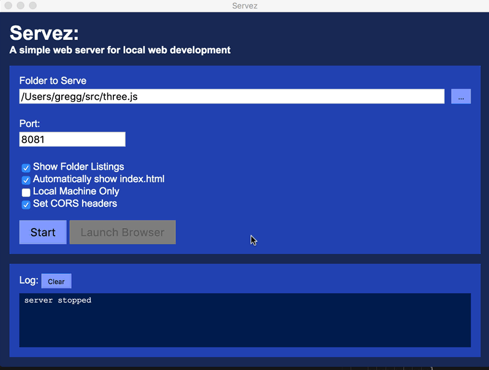
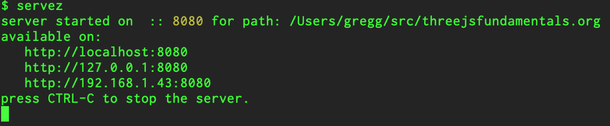

本文是关于 three.js 系列文章中的一篇。第一篇文章是 关于 three.js 基础知识。如果你还没有阅读，建议你从那里开始。
在继续之前，我们需要讨论如何将你的计算机设置为开发环境。特别是出于安全原因，WebGL 不能直接使用硬盘上的图像。这意味着为了进行开发，你需要使用一个 web 服务器。幸运的是，开发用的 web 服务器非常容易设置和使用。
首先，如果你愿意，可以从 此链接 下载整个网站。下载后双击 zip 文件以解压文件。
接下来下载其中一个简单的网页服务器。
如果你更喜欢带有用户界面的网页服务器，可以使用 Servez。

只需将其指向你解压文件的文件夹，点击“Start”，然后在浏览器中访问 http://localhost:8080/，如果你想浏览示例，请访问 http://localhost:8080/threejs。
要停止服务，点击停止或退出 Servez。
如果你更喜欢使用命令行（我也是），另一种方法是使用node.js。下载它，安装它，然后打开命令提示符 / 控制台 / 终端窗口。如果你使用的是 Windows，安装程序会添加一个特殊的“Node 命令提示符”，所以使用它。
然后通过输入安装 servez
npm -g install servez
如果你在 OSX 上使用
sudo npm -g install servez
。完成后，键入
servez path/to/folder/where/you/unzipped/files
。或者如果你像我一样，
cd path/to/folder/where/you/unzipped/files servez
。它应该会打印类似于

的内容。然后在你的浏览器中访问http://localhost:8080/。
如果你没有指定路径，那么servez将服务当前文件夹。
如果这些选项中有任何一个不符合你的喜好，还有许多其他简单的服务器可供选择。
现在你已经设置了服务器，我们可以继续学习纹理。